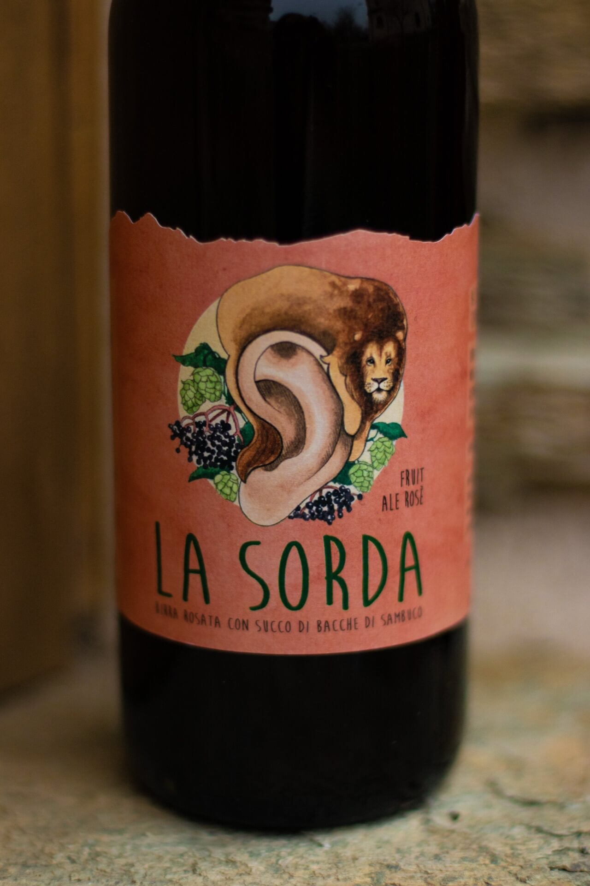

La Sorda
|img/collaborazioni/la-sorda-birra/william-fazzari-otta-shooting48.jpg
|img/collaborazioni/la-sorda-birra/la-sorda-1.jpg
|img/collaborazioni/la-sorda-birra/la-sorda-2.jpg
|img/collaborazioni/la-sorda-birra/william-fazzari-otta-shooting46.jpg
|img/collaborazioni/la-sorda-birra/william-fazzari-otta-shooting47.jpg
|img/collaborazioni/la-sorda-birra/william-fazzari-otta-shooting49.jpg
|img/collaborazioni/la-sorda-birra/william-fazzari-otta-shooting50.jpg
|img/collaborazioni/la-sorda-birra/william-fazzari-otta-shooting51.jpg
La Sorda non è solo una birra, è molto di più: un invito alla celebrazione delle proprie debolezze per farne il proprio punto di forza.
"La Sorda è la fierezza dell'essere così come si è, lo sguardo alto e il cuore impavido in una sera di primavera. È il ruggito del leone della Rosbettola, l'orgoglio del fare, del dire, dell'ascoltare. Una protesi verso l'infinito."
Una collaborazione con la ROSBettola (Boves)
La Sorda is not just a beer - it is something more: an invitation to celebrate one's weaknesses and turn them into strenghts.
"La Sorda is the pride of being exactly as you are, with your gaze lifted and your heart fearless on a spring evening. It is the roar of the Rosbettola's lion, the pride of doing, of speaking, of listening. A prothesis reaching toward infinity."
A collaboration with ROSBettola (Boves)
"La Sorda è la fierezza dell'essere così come si è, lo sguardo alto e il cuore impavido in una sera di primavera. È il ruggito del leone della Rosbettola, l'orgoglio del fare, del dire, dell'ascoltare. Una protesi verso l'infinito."
Una collaborazione con la ROSBettola (Boves)
La Sorda is not just a beer - it is something more: an invitation to celebrate one's weaknesses and turn them into strenghts.
"La Sorda is the pride of being exactly as you are, with your gaze lifted and your heart fearless on a spring evening. It is the roar of the Rosbettola's lion, the pride of doing, of speaking, of listening. A prothesis reaching toward infinity."
A collaboration with ROSBettola (Boves)
